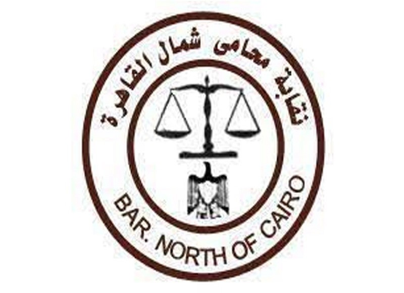
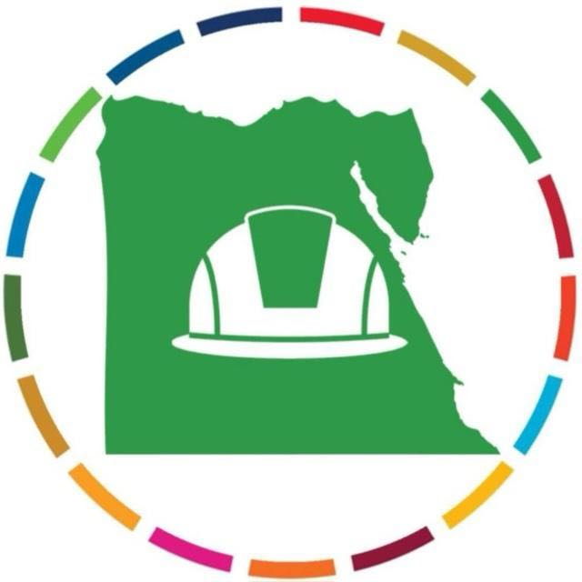
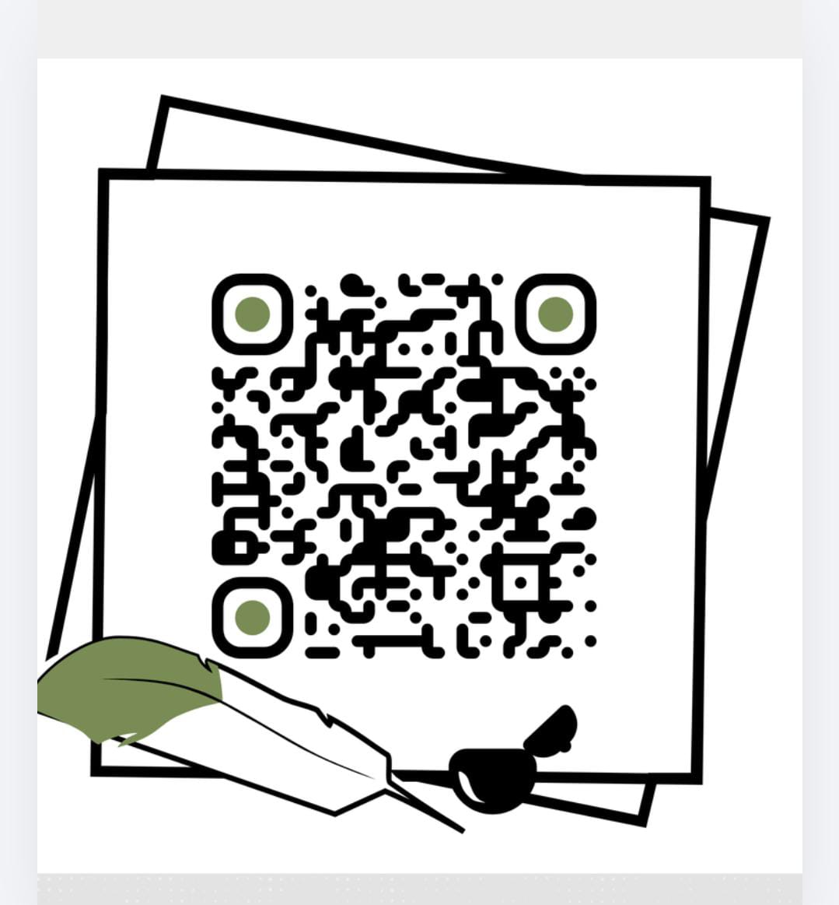

تغطية شاملة لمستجدات قانون الإجراءات الجنائية الجديد ومقارنته بالسابق، مع تدريب عملي تطبيقي على الإجراءات الرقمية، وإيداع المستندات، والتعامل مع مختلف درجات المحاكم والنيابات.
25 نوفمبر - 7 ديسمبر 2026
تدريبية ونقاشية معتمدة
مستشارون وأساتذة قانون
مشتركة وموثقة
متبقي على انطلاق البرنامج التدريبي:
حرصاً من مجلس النقابة على الارتقاء بمستوى السادة الزملاء المحامين ومواكبة التحول الرقمي لمنظومة العدالة المصرية
راعي البرنامج التدريبي وداعم منظومة التطوير والتقاضي الإلكتروني
المحامي بالنقض
يقدم البرنامج نخبة من كبار فقهاء القانون وأساتذة الجامعات ورجال القضاء المتخصصين
دكتور فلسفة القانون وتاريخه بجامعة المنصورة الجديدة
أستاذ القانون الجنائي بكلية الحقوق جامعة القاهرة، ومدير برنامج القانون بجامعة القاهرة الأهلية
رئيس محكمة استئناف القاهرة وعضو المكتب الفني
المستشار بهيئة قضايا الدولة ومحاضر بجامعة الأزهر
دكتور القانون الجنائي بكلية الحقوق - جامعة القاهرة
6 أيام مكثفة | 12 ساعة تدريبية (كل ساعة تتضمن 50 دقيقة تدريب تطبيقي و10 دقائق للنقاش المستفيض)
المحاضر: معالي الدكتور / عماد الدين منير
المحاضر: معالي الدكتور / بشير سعد زغلول
المحاضر: معالي المستشار / شادي غلاب
المحاضر: معالي المستشار / حسام الدين علام
المحاضر: معالي الدكتور / أحمد عبد القادر
المحاضر: معالي الدكتور / أحمد عبد القادر
الجنايات والتقاضي اليوم لم يعودا مجرد مرافعة خطابية وحفظ نصوص قانونية تقليدية. نحن أمام انقلاب تشريعي وإجرائي شامل: قانون إجراءات جنائية جديد كلياً، استئناف الجنايات المستحدث، الإعلان الإلكتروني الإلزامي، وضوابط مشروعية الدليل الرقمي والتحقيق عن بُعد.
"الهدف ليس أن تحفظ نصوص القانون... بل أن تجلس مع من يصنعون الأحكام، وتفهم كواليس غرف المداولة وكيف يقتنع القاضي بالدليل الرقمي."
يحصل المتدرب على شهادة معتمدة موثقة من نقابة محامي شمال القاهرة ومؤسسة مهندسون من أجل مصر المستدامة تثبت اجتياز 12 ساعة تدريبية.
مخصص للسادة المحامين المقيدين، أعضاء النيابات والهيئات القضائية، الباحثين القانونيين، وطلاب كليات الحقوق والشريعة والقانون.
منحة مدعومة بالكامل، مع سداد رسوم إدارية مخفضة: 250 جنيهاً للطلاب، و 300 جنيهاً للمحامين وأعضاء الهيئات القضائية.
محاضرات مقارنة، مناقشة إشكاليات تطبيقية وقضايا واقعية، غرف نقاش مباشرة مع كبار المستشارين، ومحاكاة لرفع الدعاوى رقمياً.
توفير مادة علمية شاملة للمقارنة بين القانونين، وصيغ ونماذج عملية للدفوع والطلبات المتعلقة بالتقاضي والإيداع الإلكتروني.
محاضرات مسائية (من 7 إلى 9 مساءً) ملائمة لظروف عمل السادة المحامين وأعضاء الهيئات القضائية مع إتاحة تسجيلات المحاضرات للمراجعة.
اضغط على الزر أدناه للانتقال إلى استمارة التسجيل الرسمية، أو قم بمسح الرمز (QR Code) بكاميرا هاتفك المحمول. سيتم التواصل معك لتأكيد الحجز وتفاصيل الالتحاق فور إرسال البيانات.
